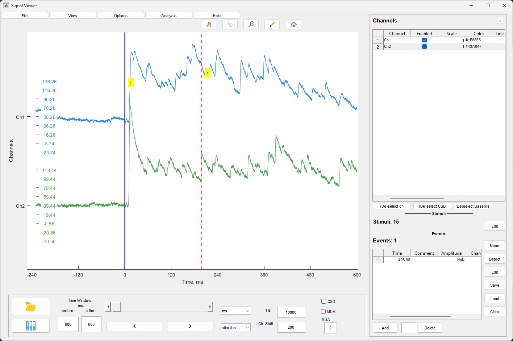

Окно просмотра сигналов предназначено для визуализации многоканальных
LFP сигналов, управления событиями и стимулами, обработки сигналов и
базового анализа.

Основное окно Signal Viewer
Основное окно
Окно состоит из следующих элементов:
Графическая область - отображение многоканальных
сигналов
Боковая панель - настройки каналов, стимулов и
событий
Панель управления временем - навигация по
данным
Меню - File, View, Options, Analysis
Загрузка файлов
Загрузка ZAV файла
Для загрузки файла в формате ZAV (.mat) используйте:
Кнопку Load .mat File на панели инструментов
Меню File/Open ZAV(.mat) file
После выбора файла откроется диалог выбора. При первой загрузке файла
сигналы отображаются на всех каналах по умолчанию.
Загрузка ZAV файла
Загрузка EV файла
Для загрузки событий в формате EV (.ev) используйте:
Кнопку Load Events на панели инструментов
Меню File/Open event (.ev) file
После выбора файла загружаются LFP данные для соответствующих событий
и сами события. События отображаются в таблице событий на боковой
панели.
Загрузка EV файла
Сохранение файла
Для сохранения текущего файла используйте меню File/Save
ZAV(.mat) file. Сохраняются все настройки каналов, события и
стимулы.
Управление временем и
навигация
Слайдер времени
Слайдер в нижней части окна позволяет перемещаться по временной оси
данных. Перетаскивание ползунка изменяет отображаемый временной
интервал.
Слайдер времени
Единицы измерения времени
Выпадающий список единиц измерения позволяет выбрать: -
s - секунды - ms - миллисекунды
- min - минуты
Выбранная единица применяется ко всем временным параметрам и
отображению на оси времени.
Единицы измерения времени
Режим просмотра
Выпадающий список режима просмотра определяет точку отсчета для
навигации:
time - обычное время
stimulus - навигация по стимулам
event - навигация по событиям
sweep - навигация по свипам
При выборе режима стимул/событие/свип слайдер и кнопки навигации
перемещаются между соответствующими точками.
Режим просмотра
Временное окно
Поля before и after определяют
размер временного окна отображаемого вокруг текущей точки. Значения
задаются в выбранных единицах измерения.
Временное окно
Кнопки навигации
Кнопки Previous и Next перемещают
отображаемый интервал на один шаг назад или вперед. Размер шага
определяется размером временного окна.
Кнопки навигации
Дополнительные параметры
Fs - частота дискретизации отображаемого сигнала.
Изменение значения применяется к отображению.
Ch. Shift - величина вертикального смещения между
каналами в единицах амплитуды сигнала.
Дополнительные параметры
Настройки каналов
Боковая панель содержит таблицу настроек каналов. Каждый канал имеет
следующие параметры:
Channel - название канала (не редактируется)
Enabled - включение/выключение отображения
канала
Scale - коэффициент масштабирования амплитуды
Color - цвет линии сигнала
Line Width - толщина линии
Averaging - участие канала в усреднении для
вычитания среднего
CSD - участие канала в расчете CSD
Filter - применение фильтрации к каналу
Baseline - вычитание базовой линии
Таблица каналов
Быстрое управление каналами
Кнопки под таблицей каналов:
(De)select ch - переключение видимости всех
каналов
(De)select CSD - переключение участия всех каналов
в CSD
(De)select Baseline - переключение вычитания
базовой линии для всех каналов
Скрытие боковой панели
Кнопка × в верхней части боковой панели скрывает
панель для увеличения области графика. Кнопка □
восстанавливает панель.
Альтернативно используйте меню View/Hide Channel
Settings или View/show Channel Settings.
Управление событиями
Таблица событий
Таблица событий отображается в нижней части боковой панели. Содержит
колонки:
Time - временная метка события
Comment - комментарий к событию
Таблица событий
Добавление события
Для добавления события:
Нажмите кнопку Add Event под таблицей событий
Или зажмите Ctrl и кликните мышью на графике в
нужной точке
Поведение добавления события зависит от настроек ручного добавления
(см. раздел “Настройки ручного добавления событий”).
Удаление события
Выберите событие в таблице (введите номер в поле под таблицей)
Нажмите кнопку Delete Event
Кнопка Clear Table удаляет все события из
таблицы.